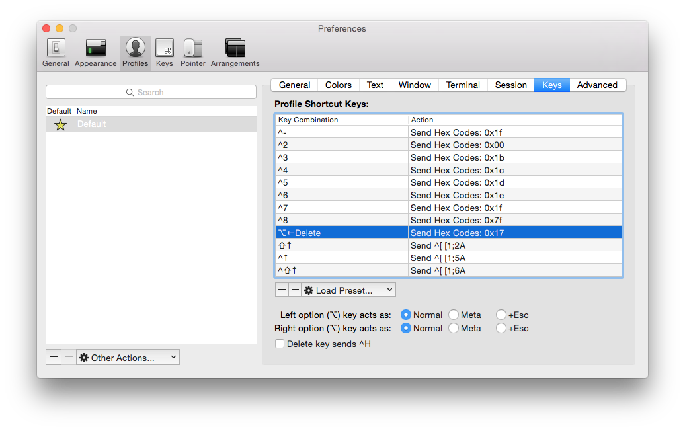

werase in iTerm2
Eric Bailey
Written on 9 September, 2015
Tags: osx, hack, terminal, productivity
Using a fresh install of iTerm2, I found that ⌥⌫ wasn't working as
expected. Within minutes, I noticed a significant decrease in productivity,
since (apparently) I use werase all the time.
Without further ado, here's the time-saving fix I settled on.

Shout out to to Key Codes (and Homebrew) for making it easy to find the appropriate hex code.
brew cask install key-codes